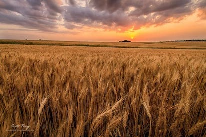

Welcome!
Hello, all! My name is Halle Johnson. My goal for Halle's Horse Lessons is to expand my love for horses and teaching into something greater. I believe everyone should get a chance to experience horses at some point, so I am here to make that happen in a fun and safe environment!
What is Halle's Horse Lessons?
Halle's Horse Lessons encourages kids to spend time outside in a farm environment with an emphasis on horses. We think every child should learn where their food comes from, the importance of treating animals right, and overall encourage outdoor learning!
About Us
Halle has grown up around horses her whole life and is very experienced. She barrel races on her own horses but hopes to instill a love for all kinds of horsemanship with her students. She encourages everyone to step out of their comfort zones and engage in challenges. Halle's goal for every kid is to have them leave more knowledgable than when they came and to have wonderful life skills that can be used for life - all while having a blast!
